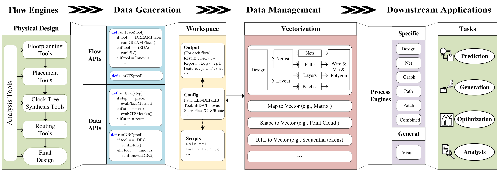
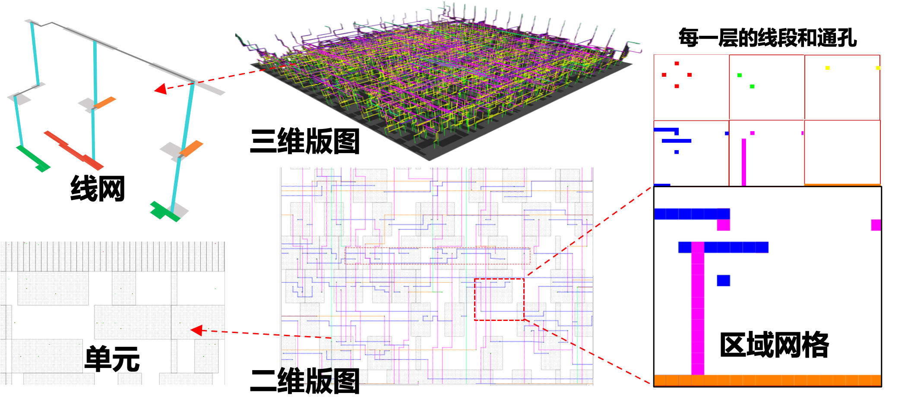

Ph.D. Candidate | AI + EDA
邱奕杭
中国科学院大学 · 计算机应用技术博士生
目前研究方向聚焦 AI（传统小模型、大语言模型与智能体）与 EDA 的深度融合，具备 EE/CS 跨学科背景，长期围绕“如何让算法真正服务芯片设计流程”开展研究与工程实践。科研偏好是做“基础的、重要的、有影响力”的工作，认可“科研重工业模式”，即有价值的科研应建立在长期、扎实的工程积淀之上。工作风格上推崇开源，注重框架性工作和基础设施构建，强调研究的可落地、可复现、可扩展。研究兴趣聚焦物理设计阶段，涵盖经典布局算法优化、AI 辅助物理设计、物理设计分析方法学等方向，并在 iEDA、AiEDA 等开源项目中持续推进从流程运行、数据提取、设计向量化到模型训练与闭环验证的全链路优化。
教育背景
中国科学院大学 · 博士 · 计算机应用技术
核心课题：集成电路物理设计语义建模与向量驱动优化研究。导师：王伟强。
广东工业大学 · 硕士（保研） · 控制科学与工程
核心课题：面向 VLSI 可布线性布局优化算法研究。导师：熊晓明。
广东工业大学 · 本科 · 通信工程（广工 IC 班）
核心课程：算法与数据结构、计算机体系结构、信息论、通信原理、数字集成电路设计、模拟集成电路设计、信号与系统等。绩点分别在通信工程专业排名第一（1/182）与 IC 班排名第一（1/60）。
项目经历
开源 AI 辅助 EDA 工具库 AiEDA
- 面向 AI 辅助 EDA 的“数据鸿沟”问题，基于“设计向量化”概念搭建闭环优化平台。
- 平台覆盖设计流程运行、特征提取、向量化数据生成、模型训练与部署。
- 基于 50 个芯片用例构建开源芯片数据集 iDATA，降低研究者获取与使用芯片数据的门槛。
- 开源代码维护者，相关论文成果《AiEDA: An Open-Source AI-Aided Design Library for Design-to-Vector》被 EDA 领域顶刊 TCAD 收录。
- 在 CCF DAC Demo Contest 现场展评中获优秀 Demo。



竞赛经历
2025 openDACS 开源 EDA 与芯片大赛 · 布线前瞻资源感知
团队成员：李子超、邱奕杭、王瑞。指导老师：蔡晔、王伟强。小组构建布线需求增量预测模型，并将其整合进布线器实现闭环优化；在总决赛路演答辩中以总分第一名获评“开源创新之星”。
2025 EDA 平方 · 侠客岛难题挑战：面向 PPA 的混合尺寸布局算法
团队成员：陈仕健、赖心华、邱奕杭。指导老师：李兴权、解壁伟、陈明宇。小组提出面向 PPA 优化的混合尺寸布局算法，并基于多目标贝叶斯优化实现自动参数调优，最终获得第三名。
ICCAD Contest Problem B：Die-to-Die 三维芯片布局
团队成员：赵雪岩、陈仕健、邱奕杭、李江考。指导老师：黄志鹏、李兴权。小组基于开源布局器 DREAMPlace，构建双层规划模型与交替优化框架，解决 3D IC 中的 Die-to-Die 布局问题。竞赛获 First Place，成果发表于 ICCAD，论文题目为《iPL-3D: A Novel Bilevel Programming Model for Die-to-Die Placement》。
EDA 设计精英挑战赛：智能 MPW 拼接
团队成员：钟立钊、邱奕杭、陈建宇。指导老师：熊晓明、蔡述庭。小组将 MPW 版图拼接建模为 Floorplan 多目标优化问题，采用 B* 树与快速模拟退火算法求解，获全国二等奖。
美国大学生数学建模竞赛（MCM）
团队成员：邱奕杭、陈剑宇、汤桂斌，获得 M 奖；团队成员：陈柱光、邱奕杭、麦家升，获得 F 奖。本人连续两届参赛，主导建模并参与论文写作，分别获得 Finalists（全球前 1%）与 Meritorious Winners（全球前 6%）。
全国大学生恩智浦杯智能汽车竞赛
团队成员：简明朝、杨锐佳、邱奕杭。小组搭建无线充电节能直立小车，实现车体直立、自主循迹与自动充电等功能，获华南赛区三等奖。
荣誉与技能
荣誉与实践
- 本科期间多次获评国家奖学金、创新奖学金、企业奖学金、优秀学生干部等荣誉，并获评“星耀工大”校园“十佳大学生”、揭阳市“智能工匠”奖与“科技创新”奖。
- 曾任班长、团支书、班主任助理，组织并参与多项班级与学生工作活动，具备较强的组织协调与执行能力。
- 硕士期间在鹏城实验室 iEDA 团队开展开源 EDA 软件研发实践，积累了完整的工程协作与项目推进经验。
- 博士期间加入中国科学院大学计算机学院羽毛球队，并在学院比赛中获得男双、混双双亚军。
技术能力
- 编程语言与开发：熟练使用 C++、Python，具备规范化工程开发与代码协作经验。
- 工程工具：熟悉 Linux、Git、CMake、Docker、UV 等研发工具链与工作流。
- 领域经验：具备商业物理设计工具 Innovus，以及开源物理设计工具链 iEDA、OpenROAD 的全流程实践经验。
- 英语能力：通过 CET-6，具备良好的文献阅读、信息检索与学术写作能力。
联系方式
电子邮箱：qiuyihang23@mails.ucas.ac.cn
GitHub仓库：@YihangQiu
谷歌学术： @YihangQiu
常住地：北京市怀柔区怀北镇中国科学院大学（雁栖湖校区）；广东省深圳市光明区深圳理工大学（明珠校区）